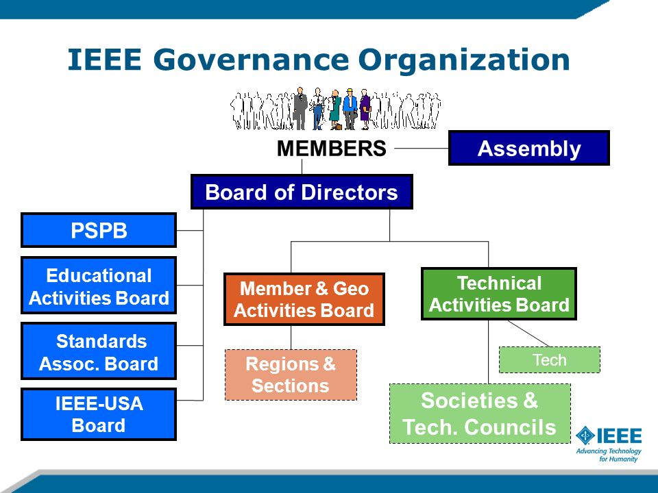

IEEE creates an environment where members collaborate on world-changing technologies – from computing and sustainable energy systems, to aerospace, communications, robotics, healthcare, and more. The IEEE Brand Identity Toolkit explains the basic usage rules for all corporate identity elements and how to utilize them to create a powerful and consistent communications pieces.
IEEE is led by a diverse body of elected and appointed volunteer members. The governance structure includes boards for operational areas as well as bodies representing members in the 45 Societies and technical Councils and ten worldwide geographic regions.

For over a century, the IEEE has sponsored various programs to honor achievements in education, industry, research, and service. These awards and recognitions each have a unique mission and criteria, and offer the opportunity to praise distinguished colleagues, dedicated teachers, and corporate leaders who have made a lasting impact on humanity, technology, and the profession